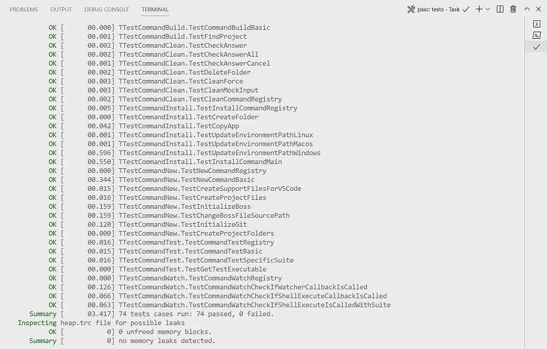

Test
Description
The purpose of this command is to display an aligned and colored output to make it easier to follow the test results. For it to work, there must be a previously compiled test project in a subfolder called "tests". This project needs to be of type fpcunit framework. If the project was created with the command new from pasc, and if the test project was created with the command add –tests from pasc, then these requirements must already be met.
This command accepts a "–test-case" option that can be given the name of a test class (suite) or the name of a specific method so that it is possible to reduce the focus of what is currently being tested.
Example:Another important feature is the output about possible memory leaks reported by the project at the end of its execution.
pasc test
Check the output for pasc as an example:

In the example above, we can see the execution time for each test, we can see an OK in green and the name of the test. We can see an example of a test that fails in section Add Command, and also a memory leak too.
Example for a single suite:
pasc test --test-case=TTestUtilsShell
Check the output for pasc TTestUtilsShell class as an example:

We can see a shorter output with tests results only for the selected class.
Tasks
It's worth mentioning the vscode tasks configured to run the test project, as well as the entry in the launch.json file that allows debugging the test project targeting a specific test.
pasc: run tests
This task calls pasc test as shell, but it depends on task lazbuild: build tests, so every time you run it the test project is built to provide a updated result.
Debug tests
This an entry on launch.json file, you can choose this debug item as the start point for debug, this allows to debug an specific test case.
Watch command
Test command is also used by another command called watch that will be covered in the watch section.
Next Version Command |
|---|
Generated by PasDoc 0.16.0.